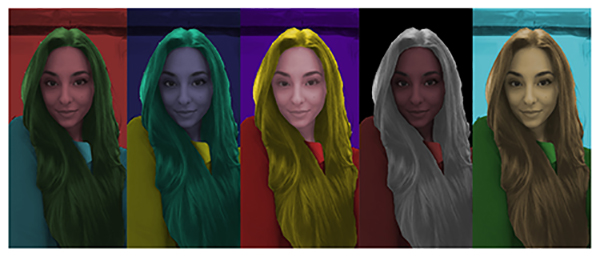
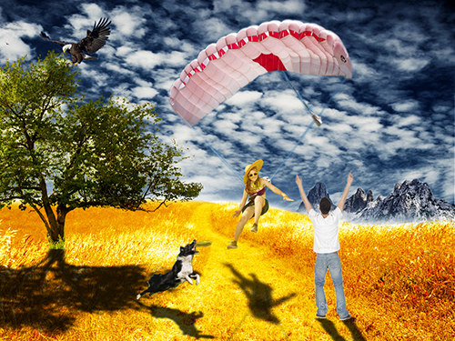

VJEŽBA 1.
Kreiranje vlastitog fonta u FontForge-u.
VJEŽBA 2.
Crtanje Bezierovih krivulja u koordinatnom sustavu - Inkscape.
Pdf dokumentVJEŽBA 3.
Kreiranje predmeta transformacijom, grupiranjem i dupliciranjem - Inkscape.
Pdf dokumentVJEŽBA 4.
Izrada složenih objekata koji se sastoje od više staza metodama spajanja ili oduzimanja - Inkscape.
Pdf dokumentVJEŽBA 5.
Tehnike retuširanja slike - Photoshop.
VJEŽBA 6.
Tehnike koloriranja slike - Photoshop.
VJEŽBA 7.
Kombiniranje više fotografija izrezivanjem dijelova različitih slika i spajanjem u jednu cjelinu (fotomontaža) - Photoshop.
VJEŽBA 8.
Obrada videa tehnikom kinemagraf - Shotcut.

VJEŽBA 9.
Rezanje i spajanje video isječaka iz više izvora uz efekte - Shotcut.